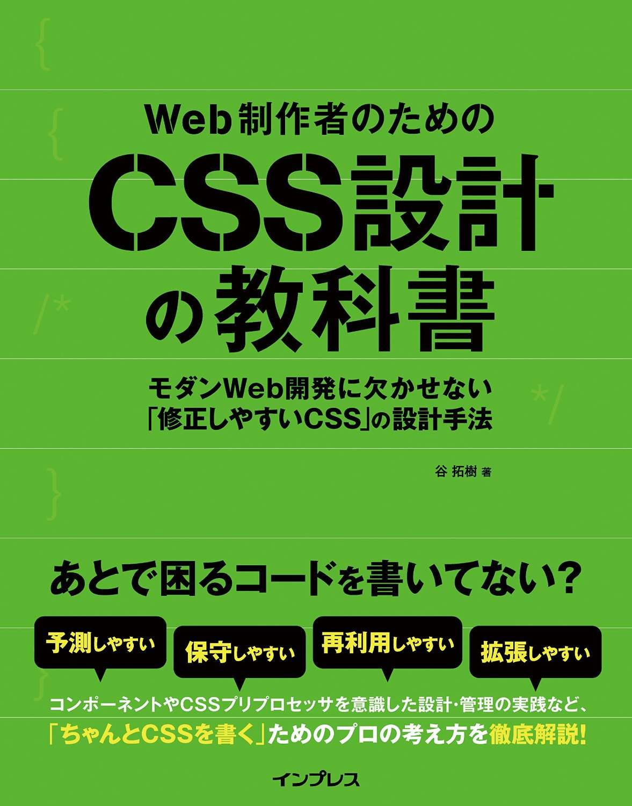

Toro_Unit
Hiroshi Urabe
- HAMWORKS Co., Ltd.
- フロントエンドエンジニア
- WordBench長野モデレーター
札幌でリモートワークはじめました
WordBench長野やってます。
WordPress とかの話を肴にピザを食う会です。
ほんだい。
Q. CSSって簡単?
サイトのタイトル
何色になるでしょう
```CSS .title:first-child { color: red; } #main-contents .title { color: orange; } .post .title { color: yellow; } h1.title { color: green; } main#main-contents article .title { color: blue; } main#main-contents .headline h1 { color: violet; } main article header h1.title { color: pink; } main#main-contents .post:first-child h1 { color: white; } ```サイトのタイトル
ブログのタイトル
記事のタイトル
CSSは簡単に書けるけど、すぐに複雑化
プログラミングと一緒。
書き捨てる数行のスクリプトと、何百、何千行のコードは別物。。。
CSSもちゃんと設計する必要!!!
最近よく見る設計。
- Normalize
- Base
- Components
Normalize
ブラウザのごとのデフォルトCSS違いを均一化。
- Normalize.css
- Sanitize.css
NSEGとは
長野県とコンピューターをテーマにした勉強会です。
2010年2月に始まりました。
NSEGとは
長野県とコンピューターをテーマにした勉強会です。
2010年2月に始まりました。
.card {
display: block;
border: 1px solid rgba(255, 255, 255,.5);
}
.card .card__image {
width: 100%;
margin: 0;
border: none;
display: block;
}
.card .card__title {
font-size: 1.5em;
margin: 0.5em 0;
}
.card .card__body {
padding: 12px;
}- HTMLへのコンテキストへの依存を避ける
- class名でコンポーネントを表現
- 他のコンポーネントへは触らない
HTMLへのコンテキストへの依存を避ける
.card h1 {
}h1がh2等に変わっても同じスタイルがあたって欲しいことのほうが多いので、
.card .card__title {
}class名でコンポーネントを表現
これでもいいいんじゃ・・・
.card .title {
}Section Title のスタイルは?????
Post Title
Section Title
.card {}
.card .title {}
.post {}
.post .title {}
Post Title
Section Title
.card {}
.card__title {}
.post {}
.post__title {}
クラス命名のアイデア
BEM
.block {}
.block__element {}
.block__element--modifier {}
NSEGとは
長野県とコンピューターをテーマにした勉強会です。
2010年2月に始まりました。
NSEGとは
長野県とコンピューターをテーマにした勉強会です。
2010年2月に始まりました。
Bootstrap
最近4.0がでました

Card title
Some quick example text to build on the card title and make up the bulk of the card's content.
Go somewhere
他のコンポーネントへは触らない
こういうCSSを書くと
.card {}
.card .button {}
.card {}
.card .button {}
.button {}
.button.button--primary {}
CSSの読み込み順、書き順で結果が変わる！
- セレクタを強くしたり、
!importantで解決したりしてより泥沼化。 - どのCSSが何処でどう影響しているかがよりわからないので消せない。
ここら辺を頑張ればそこそこ良いCSSライフを送れる。
が
それでもすぐCSSは壊れる
- CSSは超ゆるふわ言語。簡単に壊れる。
- 簡単に上書き可能。
- 設計を守らせるための機能は無い。
- 一度設計が破綻すると、そのCSSが設計が信用できなくなる。
- そして上書きするしか出来ずに泥沼化。
ドキュメントと強い意志が大切
- デザインがブラウザで再現できた！で終わりにしない。絶対リファクタリングする！
- Bootstrapみたいにコピペ出来るようなスタイルガイド。言語では無く、機能ごとに分離。
- コンポーネント単位でファイルを切り分けて、他のコンポーネントへは絶対に触らない。
- その設計指針をしっかりチーム内で統一
- 割れた窓の法則、ボーイスカウトの規則
- 直交性、開放/閉鎖原則、単一責任の原則など、プログラミングのノウハウをCSSにも適用。
- 毎回やるのは大変なので、SMACSS、BEM等、そこそこ普及していて、シンプルなルールを採用するのが吉。
More...?
Web制作者のためのCSS設計の教科書

Thanks!
- Github / @torounit
- Twitter: @Toro_Unit
- Facebook: fb.me/torounit
- Blog: https://torounit.com